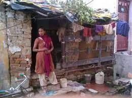

Bc road

The BC Road Slum in GVMC (Greater Visakhapatnam Municipal Corporation) is a densely populated informal settlement located along BC Road, which is a major road in the city of Visakhapatnam, Andhra Pradesh, India. The slum is characterized by its makeshift houses constructed from temporary materials such as tarpaulins, plastic sheets, and scrap wood, with little to no access to basic amenities such as clean water, sanitation facilities, and proper waste management
Major Problems
- Lack of Basic Amenities: The slum dwellers in BC Road Slum often lack access to basic amenities such as clean water, sanitation facilities, and electricity. The absence of proper water supply and sanitation infrastructure leads to unhygienic conditions, posing health risks for the residents.
- Poor Housing Conditions: The houses in BC Road Slum are makeshift structures made from temporary materials, which are often overcrowded, cramped, and lack proper ventilation. The living conditions are substandard, with inadequate protection from the elements, making the residents vulnerable to harsh weather conditions.
- Poverty and Unemployment: Many residents of BC Road Slum work as daily wage laborers or in low-paying jobs, struggling to make ends meet. Poverty and unemployment are pervasive issues, resulting in inadequate income, lack of job security, and limited access to education and skill development opportunities.
- Sanitation and Waste Management Issues: The absence of proper waste management and sanitation facilities in BC Road Slum can lead to unhygienic conditions, with garbage accumulation, open defecation, and pollution posing health and environmental hazards for the residents